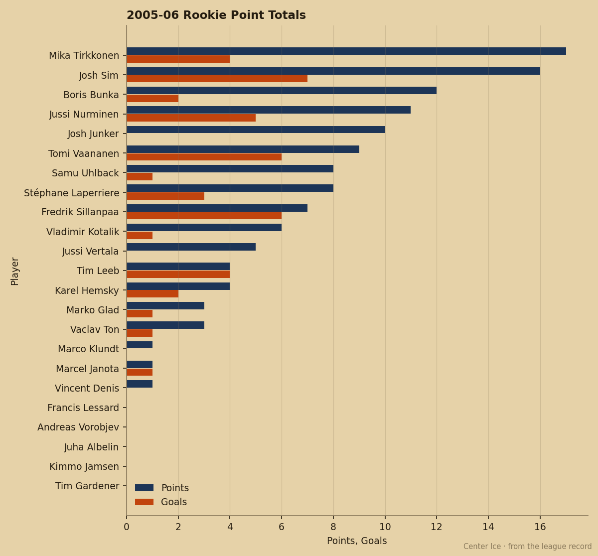
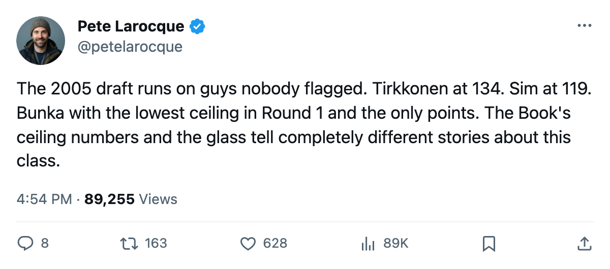
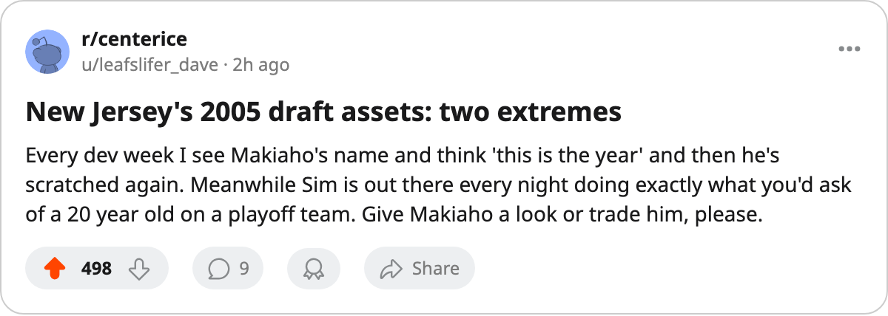

STL
STLPick 89 Has a 99 and 0 Shifts. Pick 134 Has a 72 and 17 Points.
The 2005 draft's production sits in Rounds 3 through 5. New Jersey holds both ends of the disconnect.
 Pete LarocqueScouting editor · The Prospect File
Pete LarocqueScouting editor · The Prospect File
Four of the five players the 2005 draft produced who carry 10 or more points this season were picked in Round 3 or later. Petri Makiaho66 has the class's highest potential grade, a 99 from the Bureau's Book. He has played 0 games for  New Jersey Devils.
New Jersey Devils.
The 2005 class has 23 players on league rosters with at least one game logged. The men the Book rates highest are the ones sitting out, unsigned, or invisible in fourth-line minutes. The men carrying the class's offense came from Rounds 3 through 5, where no team spent a first-round pick.
The first round scored 13 points total
Of the 17 first-round picks the 2005 draft carries on record, 5 have appeared in a league game. Two have recorded a point.
| Pick | Player | Potential | Team | GP | Points | MPG |
|---|---|---|---|---|---|---|
| 1 | Juha Albelin58 | 76 | MTL | 9 | 0 | 11.0 |
| 5 | Tim Gardener75 | 98 | TOR | 23 | 0 | 3.6 |
| 11 | Francois Anderson76 | 59 | BUF | 1 | 0 | 60.0 |
| 18 | Boris Bunka64 | 51 | DET | 36 | 12 | 17.6 |
| 19 | Vincent Denis68 | 69 | ANA | 7 | 1 | 18.7 |
Boris Bunka, Detroit's pick 18, is the only first-rounder with real offense. The Book gives him a 51 potential, the second-lowest in the round. He plays 17.6 minutes a night and has 12 points in 36 games for  Detroit Red Wings.
Detroit Red Wings.
Tim Gardener is the counter-case.  Toronto Maple Leafs took him 5th overall. The Bureau's Book puts his potential at 98. He has played 23 games in 3.6 minutes a night. The point column reads 0.
Toronto Maple Leafs took him 5th overall. The Bureau's Book puts his potential at 98. He has played 23 games in 3.6 minutes a night. The point column reads 0.
Ten of the remaining twelve recorded first-rounders are scratched. Two are unsigned: Petr Beier, potential 99, and Marcel Ballo, potential 62. Leo Atonovich56 carries a 96 potential in Atlanta and hasn't skated a shift. Neither has Len Eisenhut67 at 79 in Nashville or Jason Allen64 at 72 in San Jose.
New Jersey holds both ends of the problem
Makiaho went 89th overall in Round 3 to New Jersey Devils. The Book lists him at 66 overall with that 99 potential. He is scratched. Josh Sim75, selected 119th in Round 4, has played 38 games and scored 16 points in 12.6 minutes a night. His potential is 72.

New Jersey sits at 23-9-3, 57 points through 39 games.
Tirkkonen leads the class from pick 134
Mika Tirkkonen75 has the most points of any 2005 draftee: 17 in 20 games for  New York Islanders. He was the 134th selection in Round 5. The Bureau's Book gives him a 74 potential.
New York Islanders. He was the 134th selection in Round 5. The Bureau's Book gives him a 74 potential.
At 19.5 minutes a night, Tirkkonen carries the heaviest workload in the class among players with 10 or more games. Jussi Vertala67 sits second at 18.9 minutes for  Washington Capitals, with 5 points in 14 games. Bunka is third at 17.6.
Washington Capitals, with 5 points in 14 games. Bunka is third at 17.6.
Jussi Nurminen71 has 11 points in 43 games at 12.1 minutes a night for  New York Rangers. He went 102nd in Round 4. His potential matches Tirkkonen's at 74.
New York Rangers. He went 102nd in Round 4. His potential matches Tirkkonen's at 74.
Josh Junker70, a third-round pick at 62, closes the five-man group with 10 points in 30 games. His potential is 57, second-lowest among the class's five double-digit scorers. Only Bunka at 51 sits below him.
The class is absent from the Index
The Development Index's biggest movers run from  Vaclav Nedorost83's +12 down to
Vaclav Nedorost83's +12 down to  Rick Nash85's +7. Not one carries a 2005 draft year. The class hasn't produced a riser or a faller. None of these players are yet good enough to show up on a tool built to track development at the league level.
Rick Nash85's +7. Not one carries a 2005 draft year. The class hasn't produced a riser or a faller. None of these players are yet good enough to show up on a tool built to track development at the league level.
The five players actually producing carry potentials between 51 and 74. The players the Bureau rated above 95 are unsigned, scratched, or skating 3.6 minutes a night. The 2006 draft is 149 days away. The Junior Bureau's top-rated prospect, Toni Kuki, carries a 99 potential with six attribute grades at 69 or below. The same spread, the same gap between the ceiling number and the floor game, sits on his page.

